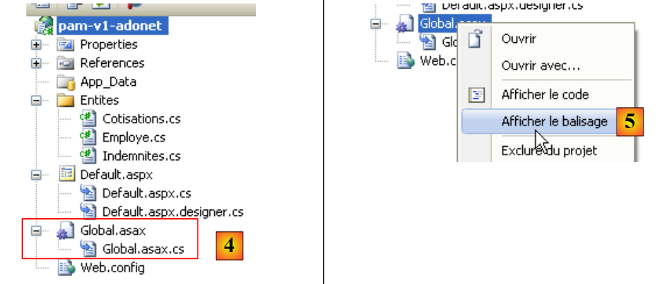

4. De toepassing [SimuPaie] – versie 1 – ASP.NET
4.1. Introduction
We willen een applicatie .NET schrijven waarmee een gebruiker simulaties kan uitvoeren voor de loonberekening van de kinderopvangmedewerkers van de vereniging „Maison de la petite enfance“ in een gemeente.
De loonberekeningsformulier ASP.NET ziet er als volgt uit:

De applicatie ASP.NET zal de volgende architectuur hebben:
 |
- Bij de eerste aanvraag aan de applicatie wordt een object van het type [Global], afgeleid van het type [System.Web.HttpApplication], geïnstantieerd. Dit object zal het configuratiebestand [web.config] van de webapplicatie verwerken en bepaalde gegevens uit de database in de cache opslaan (bewerking 0 hierboven).
- Bij het eerste verzoek (stap 1) aan de pagina [Default.aspx], de enige pagina van de applicatie, wordt de gebeurtenis [Load] verwerkt. Hierin wordt het vullen van de keuzelijst met medewerkers afgehandeld. De gegevens die nodig zijn voor de keuzelijst worden opgevraagd bij het object [Global], dat deze in de cache heeft opgeslagen. Dit is stap 2 hierboven. Stap 4 stuurt de aldus geïnitialiseerde pagina naar de gebruiker.
- Bij het aanvragen van de salarisberekening (bewerking 1) op de pagina [Default.aspx] wordt de gebeurtenis [Load] opnieuw verwerkt. Er gebeurt niets, omdat het om een verzoek van het type POST gaat en de handler [Pam_Load] zo is geschreven dat hij in dit geval niets doet (gebruik van de booleaanse waarde IsPostBack). Nadat de gebeurtenis [Load] is verwerkt, wordt vervolgens de gebeurtenis [Click] op de knop [Salaire] verwerkt. Deze heeft gegevens nodig die niet in de cache van [Global] zijn opgeslagen. Daarom vraagt de gebeurtenishandler deze op bij de database. Dit is stap 3 hierboven. Vervolgens wordt het salaris berekend en stuurt stap 4 de resultaten naar de gebruiker.
4.2. Het Visual Web Developer 2008-project
 |
- in [1], maken we een nieuw project aan
- in [2], van het type [Web / Application Web ASP.NET]
- in [3], geef je het project een naam
- in [4], wordt de naam gespecificeerd en in [5] de locatie. Er wordt een map [c:\temp\pam-aspnet\pam-v1-adonet] aangemaakt voor het project.
 |
- in [5], het Visual Web Developer-project
- in [6], de projecteigenschappen (rechtsklikken op het project / Eigenschappen / Toepassing).
- in [7], de naam van de assembly die bij het genereren van het project wordt geproduceerd
- in [8], de standaardnaamruimte die we willen gebruiken voor de klassen van het project. De klasse [_Default], gedefinieerd in de bestanden [Default.aspx.cs] en [Default.aspx.designer.cs], is aangemaakt in de naamruimte [pam_v1_adonet], afgeleid van de projectnaam. Deze naamruimte kan rechtstreeks in de code van deze twee bestanden worden gewijzigd:
[Default.aspx.cs]
using System;
....
namespace pam_v1
{
public partial class _Default : System.Web.UI.Page
{
[Default.aspx.designer.cs]
//------------------------------------------------------------------------------
// <automatisch gegenereerd>
// Deze code is door een tool gegenereerd.
// Runtime-versie: 2.0.50727.3603
//
// Wijzigingen in dit bestand kunnen tot onjuist gedrag leiden en gaan verloren als
// de code opnieuw wordt gegenereerd.
// </auto-generated>
//------------------------------------------------------------------------------
namespace pam_v1 {
public partial class _Default {
.........
De opmaak van het bestand [Default.aspx] moet ook worden aangepast:
 |
<%@ Page Language="C#" AutoEventWireup="true" CodeBehind="Default.aspx.cs" Inherits="pam_v1._Default" %>
...
Het bovenstaande attribuut Inherits verwijst naar de klasse die is gedefinieerd in de bestanden [Default.aspx.cs] en [Default.aspx.designer.cs]. Daarin wordt de naamruimte pam_v1 gebruikt.
4.2.1. Het formulier [Default.aspx]
Het uiterlijk van het formulier [Default.aspx] is als volgt:
 |
De componenten zijn als volgt:
Nr. | Type | Naam | Functie |
DropDownList | ComboBoxEmployes | Bevat de lijst met namen van de medewerkers | |
TextBox | TextBoxHeures | Aantal gewerkte uren – werkelijk aantal | |
TextBox | TextBoxJours | Aantal gewerkte dagen – geheel getal | |
Knop | ButtonSalaire | Vraag de salarisberekening aan | |
TextBox | TextBoxErreur | Informatiebericht voor de gebruiker ReadOnly=true, TextMode=MultiLine | |
Label | LabelNom | Naam van de in (1) geselecteerde medewerker | |
Label | LabelPrénom | Voornaam van de in (1) geselecteerde medewerker | |
Label | LabelAdresse | Adres | |
Label | LabelVille | Stad | |
Label | LabelCP | Postcode | |
Label | LabelIndice | Index | |
Label | LabelCSGRDS | Premiepercentage CSGRDS | |
Label | LabelCSGD | Premiepercentage CSGD | |
Label | LabelRetraite | Pensioenpremiepercentage | |
Label | LabelSS | Premiepercentage sociale zekerheid | |
Label | LabelSH | Basisuurloon voor de in (11) aangegeven index | |
Label | LabelEJ | Dagvergoeding voor de in (11) vermelde index | |
Label | LabelRJ | Dagvergoeding voor maaltijden voor de in (11) vermelde index | |
Label | LabelCongés | Toepasselijk percentage van de vergoeding voor betaald verlof op het basisloon | |
Label | LabelSB | Bedrag van het basisloon | |
Label | LabelCS | Te betalen bedrag aan sociale premies | |
Label | LabelIE | Bedrag van de onderhoudsvergoedingen voor het opgevangen kind | |
Label | LabelIR | Bedrag van de maaltijdvergoedingen voor het kind in de opvang | |
Label | LabelSN | Nettoloon dat aan de werknemer moet worden uitbetaald |
Het formulier bevat bovendien twee velden van het type [Panel]:
bevat de component (5) TextBoxErreur | |
bevat de componenten (6) tot en met (24) |
Een component van het type [Panel] kan programmatisch al dan niet zichtbaar worden gemaakt via de booleaanse eigenschap [Panel].Visible.
4.2.2. Controle van de invoer
Om een salaris te berekenen, doet de gebruiker het volgende:
- een werknemer selecteren in [1]
- voert het aantal gewerkte uren in in [2]. Dit getal kan een decimaal getal zijn, zoals 2,5 voor 2 uur en 30 minuten.
- voert het aantal gewerkte dagen in via [3]. Dit getal is een geheel getal.
- vraag het salaris op met de knop [4]
 |
Wanneer de gebruiker onjuiste gegevens invoert in [2] en [3], worden deze gecontroleerd zodra de gebruiker van invoerveld wisselt. Zo is de onderstaande schermafbeelding gemaakt nog voordat de gebruiker op de knop [Salaire] klikte:
 |
Er zijn twee voorwaarden nodig om het bovenstaande gedrag te verkrijgen:
- de validatiecomponenten moeten de eigenschap EnableClientScript op ‘waar’ hebben staan:
 |
- de browser die de pagina weergeeft, moet in staat zijn om de in een pagina ingebedde JavaScript-code uit te voeren HTML.
Als de browser van de klant de geldigheid van de gegevens niet zelf controleert, worden deze pas gecontroleerd wanneer de browser de formuliergegevens naar de server verstuurt. Het is dan de code op de server die het verzoek van de browser verwerkt, die de geldigheid van de gegevens controleert. We wijzen erop dat deze controle altijd moet worden uitgevoerd, zelfs als de pagina die in de browser van de klant wordt weergegeven JavaScript-code bevat die dezelfde controle uitvoert. De server kan er namelijk niet zeker van zijn dat het verzoek POST dat aan hem wordt gedaan daadwerkelijk afkomstig is van deze pagina en dat de gegevens dus al zijn gecontroleerd.
De lijst met validators is als volgt:
Nr. | Type | Naam | Rol |
RequiredFieldValidator | RequiredFieldValidatorHeures | controleert of het veld [2] [TextBoxHeures] niet leeg is | |
RangeValidator | RangeValidatorHeures | controleert of het veld [2] [TextBoxHeures] een reëel getal is in het interval [0, 200] | |
RequiredFieldValidator | RequiredFieldValidatorJours | controleert of het veld [3] [TextBoxJours] niet leeg is | |
RangeValidator | RangeValidatorJours | controleert of het veld [3] [TextBoxJours] een geheel getal is binnen het interval [0,31] |
Te doen: de pagina [Default.aspx] opbouwen. Eerst plaatsen we de twee containers [PanelErreurs] en [PanelSalaire], zodat we er vervolgens de componenten in kunnen plaatsen die ze moeten bevatten.
4.2.3. De entiteiten van de applicatie
 |
Zodra de rijen uit de tabellen [cotisations], [employes] en [indemnites] zijn ingelezen, worden ze ondergebracht in objecten van het type [Cotisations], [Employe] en [Indemnites], die als volgt zijn gedefinieerd:
namespace Pam.Entites
{
public class Cotisations
{
// automatische eigenschappen
public double CsgRds { get; set; }
public double Csgd { get; set; }
public double Secu { get; set; }
public double Retraite { get; set; }
// constructors
public Cotisations()
{
}
public Cotisations(double csgRds, double csgd, double secu, double retraite)
{
CsgRds = csgRds;
Csgd = csgd;
Secu = secu;
Retraite = retraite;
}
// ToString
public override string ToString()
{
return string.Format("[{0},{1},{2},{3}]", CsgRds, Csgd, Secu, Retraite);
}
}
}
namespace Pam.Entites
{
public class Employe
{
// automatische eigenschappen
public string SS { get; set; }
public string Nom { get; set; }
public string Prenom { get; set; }
public string Adresse { get; set; }
private string Ville { get; set; }
private string CodePostal { get; set; }
private int Indice { get; set; }
// fabrikanten
public Employe()
{
}
public Employe(string ss, string nom, string prenom, string adresse, string codePostal, string ville, int indice)
{
SS = ss;
Nom = nom;
Prenom = prenom;
Adresse = adresse;
CodePostal = codePostal;
Ville = ville;
Indice = indice;
}
// ToString
public override string ToString()
{
return string.Format("[{0},{1},{2},{3},{4},{5},{6}]", SS, Nom, Prenom, Adresse, Ville, CodePostal, Indice);
}
}
}
namespace Pam.Entites
{
public class Indemnites
{
// automatische eigenschappen
public int Indice { get; set; }
public double BaseHeure { get; set; }
public double EntretienJour { get; set; }
public double RepasJour { get; set; }
public double IndemnitesCP { get; set; }
// fabrikanten
public Indemnites()
{
}
public Indemnites(int indice, double baseHeure, double entretienJour, double repasJour, double indemnitesCP)
{
Indice = indice;
BaseHeure = baseHeure;
EntretienJour = entretienJour;
RepasJour = repasJour;
IndemnitesCP = indemnitesCP;
}
// identiteit
public override string ToString()
{
return string.Format("[{0}, {1}, {2}, {3}, {4}]", Indice, BaseHeure, EntretienJour, RepasJour, IndemnitesCP);
}
}
}
4.2.4. Configuratie van de applicatie
Het bestand [Web.config] waarmee de applicatie wordt geconfigureerd, ziet er als volgt uit:
<?xml version="1.0" encoding="utf-8"?>
<configuration>
<configSections>
...
</configSections>
<connectionStrings>
<add name="dbpamSqlServer2005" connectionString="Data Source=.\SQLEXPRESS;AttachDbFilename=C:\data\...\dbpam.mdf;User Id=sa;Password=msde;Connect Timeout=30;" providerName="System.Data.SqlClient"/>
</connectionStrings>
<appSettings>
<add key="selectEmploye" value="select NOM,PRENOM,ADRESSE,VILLE,CODEPOSTAL,INDICE from EMPLOYES where SS=@SS"/>
<add key="selectEmployes" value="select PRENOM, NOM, SS from EMPLOYES"/>
<add key="selectCotisations" value="select CSGRDS,CSGD,SECU,RETRAITE from COTISATIONS"/>
<add key="SelectIndemnites" value="select INDICE,BASEHEURE,ENTRETIENJOUR,REPASJOUR,INDEMNITESCP from INDEMNITES"/>
</appSettings>
<system.web>
<!--
Définissez compilation debug="true" pour insérer des symboles
de débogage dans la page compilée. Comme ceci
affecte les performances, définissez cette valeur à true uniquement
lors du développement.
-->
<compilation debug="false">
...
</configuration>
- regel 9: definieert de verbindingsstring met de vorige SQL-server
- regels 13-16: definiëren de query's die door de applicatie worden gebruikt om te voorkomen dat ze hard in de code worden gecodeerd.
- regel 13: de query SQL wordt geconfigureerd. De notatie van de parameter is specifiek voor de SQL-server.
Te doen: voer deze parameters in het bestand [Web.config] in. Regel 9 moet worden aangepast aan het daadwerkelijke pad naar de database [dbpam.mdf].
4.2.5. Initialisatie van de applicatie
Het initialiseren van een ASP.NET-toepassing gebeurt via het bestand [Global.asax.cs]. Dit bestand is als volgt opgebouwd:
 |
- in [1] wordt een nieuw element aan het project toegevoegd
- in [2] wordt de globale applicatieklasse toegevoegd, die standaard [Global.asax] heet [3]
 |
- in [4], het bestand [Global.asax] en de bijbehorende klasse [Global.asax.cs]
- in [5] wordt de opmaak van [Global.asax] weergegeven
<%@ Application Codebehind="Global.asax.cs" Inherits="pam_v1.Global" Language="C#" %>
De klasse [pam_v1.Global] wordt gedefinieerd in het bestand [Global.asax.cs]. Voor ons probleem wordt deze als volgt gedefinieerd:
using System;
using System.Collections.Generic;
using System.Configuration;
using System.Data.SqlClient;
using Pam.Entites;
namespace pam_v1
{
public class Global : System.Web.HttpApplication
{
// --- statische gegevens van de applicatie ---
public static Employe[] Employes;
public static Cotisations Cotisations;
public static Dictionary<int, Indemnites> Indemnites = new Dictionary<int, Indemnites>();
public static string Msg = string.Empty;
public static bool Erreur = false;
public static string ConnectionString = null;
// opstarten van de applicatie
public void Application_Start(object sender, EventArgs e)
{
...
try
{
// aanmelding
ConnectionString = ...
using (SqlConnection connexion = new SqlConnection(ConnectionString))
{
connexion.Open();
// de lijst met werknemers wordt opgehaald en in de statische array [Employes] geplaatst
...
// de premiepercentages worden opgehaald in de statische variabele [Cotisations]
...
// we halen de vergoedingen op uit het statische woordenboek [Indemnites]
...
// het is gelukt
Msg = "Base chargée...";
}
}
catch (Exception ex)
{
// de fout wordt genoteerd
Msg = string.Format("L'erreur suivante s'est produite lors de l'accès à la base de données : {0}", ex);
Erreur = true;
}
}
}
}
- regel 20: de methode [Application_Start] wordt uitgevoerd bij het opstarten van de webapplicatie. Deze wordt slechts één keer uitgevoerd.
- regels 12-17: openbare en statische velden van de klasse. Een statisch veld wordt gedeeld door alle instanties van de klasse. Als er dus meerdere instanties van de klasse [Global] worden aangemaakt, delen ze allemaal hetzelfde statische veld [Employes], dat toegankelijk is via de referentie [Global.Employes], c.a.d. [NomDeClasse].ChampStatique. [Global] is de naam van een klasse. Het is dus een gegevenstype. Deze naam is willekeurig. De klasse is altijd afgeleid van [System.Web.HttpApplication].
Laten we teruggaan naar onze klasse [Global]. Je kunt je afvragen of het nodig is om de velden ervan als statisch te declareren. Het lijkt er namelijk op dat er in sommige gevallen meerdere instanties van de klasse [Global] kunnen bestaan, wat het gerechtvaardigd maakt om de velden die door al deze instanties moeten worden gedeeld, statisch te maken.
Er bestaat nog een andere manier om gegevens met het bereik „toepassing“ te delen tussen de verschillende pagina’s van een webtoepassing. Zo zou de tabel Employes met medewerkers op de volgende manier kunnen worden opgeslagen in de procedure Application_Start:
Application.Add("employes",Employes);
[Application] is standaard in elke toepassing ASP.NET een verwijzing naar een instantie van de klasse die wordt gedefinieerd door [Global.asax.cs]. Application is een container waarin objecten van elk type kunnen worden opgeslagen. De array Employes kan vervolgens in de code van een willekeurige pagina van de webapplicatie als volgt worden opgehaald:
Employe[] employes=Application.Get["employes"] as Employe[];
Omdat de container Application objecten van elk type opslaat, krijgen we een type Object terug dat vervolgens moet worden omgezet. Deze methode is nog steeds bruikbaar, maar door gegevens te delen via statische, getypeerde velden van het object [Global] worden typeconversies vermeden en kan de compiler typecontroles uitvoeren die de ontwikkelaar helpen. Dit is de methode die hier zal worden gebruikt.
De gegevens die door alle gebruikers worden gedeeld, zijn de volgende:
- regel 12: de array van objecten van het type [Employe] waarin de vereenvoudigde lijst (SS, NOM, PRENOM) van alle werknemers wordt opgeslagen
- regel 13: het object van het type [Cotisations] waarin de premietarieven worden opgeslagen
- regel 14: het woordenboek waarin de vergoedingen in verband met de verschillende indexen van de werknemers worden opgeslagen. Het wordt geïndexeerd op basis van de index van de werknemer en de waarden zijn van het type [Indemnites]
- regel 15: een bericht dat aangeeft hoe de initialisatie is verlopen (succesvol of met een fout)
- regel 16: een booleaanse waarde die aangeeft of de initialisatie al dan niet met een fout is beëindigd.
- regel 17: de verbindingsstring naar de database.
Vraag: vul de code van de klasse [Application_Start] aan.
4.3. De gebeurtenissen van het formulier [Default.aspx]
4.3.1. De procedure [Page_Load]
Wanneer het formulier [Default.aspx] wordt geladen, zoekt het in de tabel [Global.Employes] (regel 12) naar de namen van de medewerkers om deze in de keuzelijst [1] te plaatsen:
 |
- de keuzelijst [1] is gevuld
- TextBox [5] geeft aan dat de database correct is ingelezen
Als er initialisatiefouten zijn opgetreden bij het opstarten van de applicatie, wordt dit aangegeven door de codes TextBox en [5]:

Vraag: schrijf de procedure [Page_Load] van de webpagina [Default.aspx], die bij het opstarten van de applicatie wordt uitgevoerd en de hierboven beschreven werking garandeert.
4.3.2. De salarisberekening
Als je op de knop [4] klikt, wordt de handler uitgevoerd:
protected void ButtonSalaire_Click(object sender, System.EventArgs e)
Deze handler controleert eerst of de invoer in [2] en [3] geldig is. Als een van beide onjuist is, wordt de fout gemeld zoals eerder getoond. Zodra de invoer in [2] en [3] is gecontroleerd en geldig is bevonden, moet de applicatie aanvullende gegevens weergeven over de in [1] geselecteerde gebruiker, evenals diens salaris (zie schermafbeelding in paragraaf 4.1).
Vraag: schrijf de code voor de procedure [ButtonSalaire_Click].